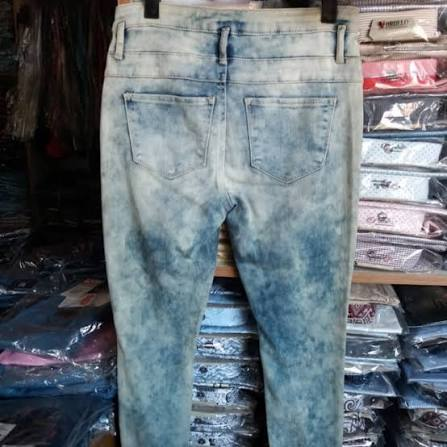
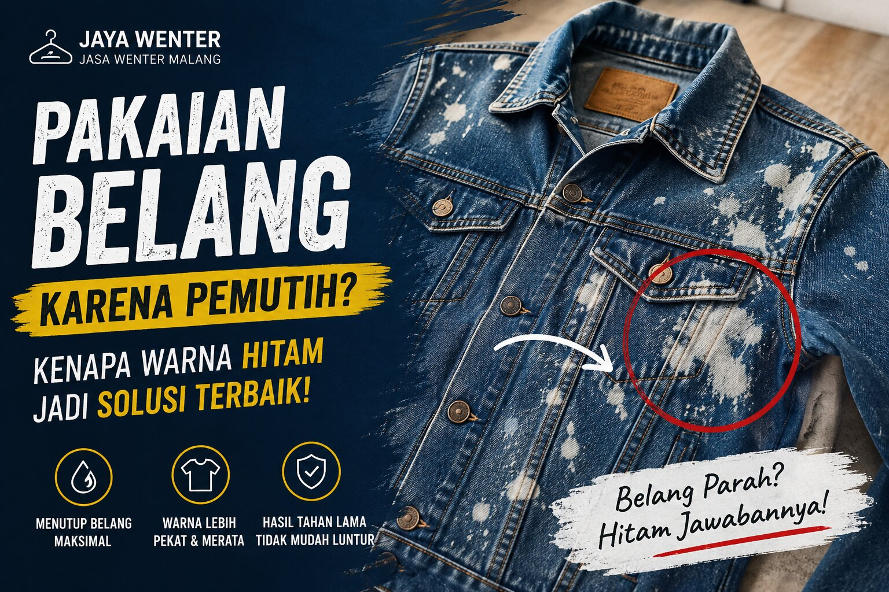

Jangan Buang Pakaian yang Kena Pemutih! Belang Bukan Akhir Ceritanya, Masih Bisa Bagus Lagi dan Hemat Ratusan Ribu Rupiah
Lebih Hemat Daripada Beli Baru. Layanan wenter sangat cocok untuk berbagai jenis pakaian...
Baca Selengkapnya →Artikel seputar perawatan pakaian, solusi mengatasi warna pudar, serta informasi mengenai proses wenter agar pakaian kesayangan Anda kembali tampil lebih pekat dan menarik.
Lebih Hemat Daripada Beli Baru. Layanan wenter sangat cocok untuk berbagai jenis pakaian...
Baca Selengkapnya →
Celana jeans hitam yang sering dicuci akan mengalami pemudaran warna. Pelajari penyebabnya dan solusi terbaik untuk mengembalikan warna agar tampak lebih pekat.
Baca Selengkapnya →Perbandingan biaya dan manfaat antara melakukan wenter dengan membeli pakaian baru..
Baca Selengkapnya →
Belang karena pemutih atau noda mencolok sering kali lebih efektif ditutupi dengan warna hitam. Simak alasannya di sini.
Baca Selengkapnya →